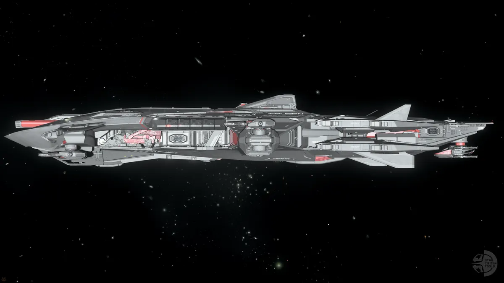
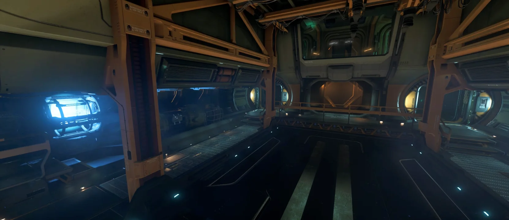
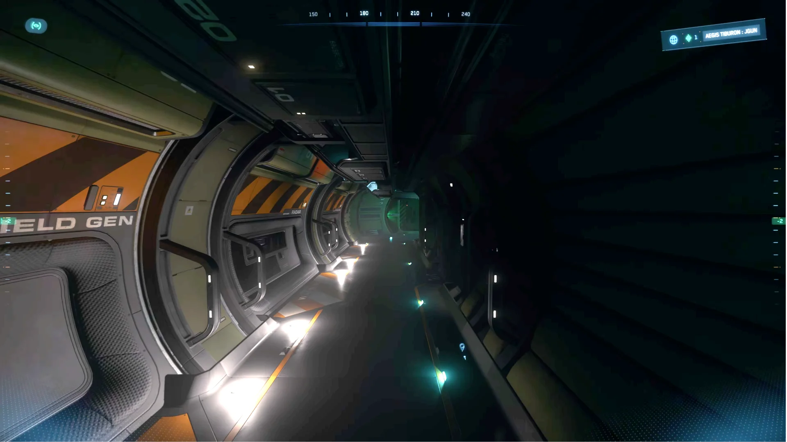
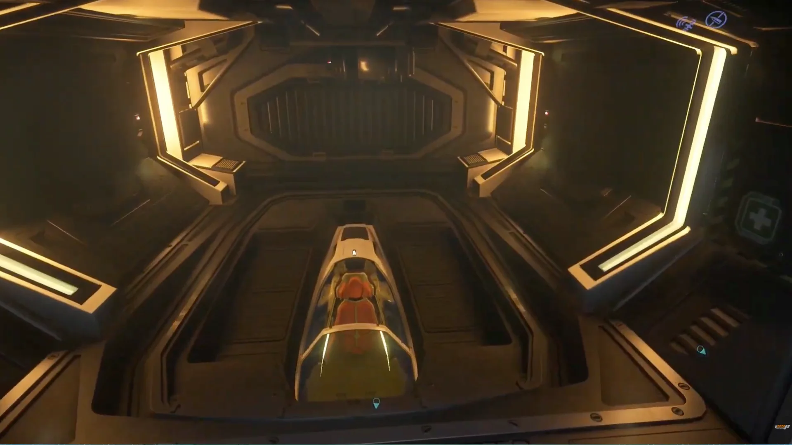
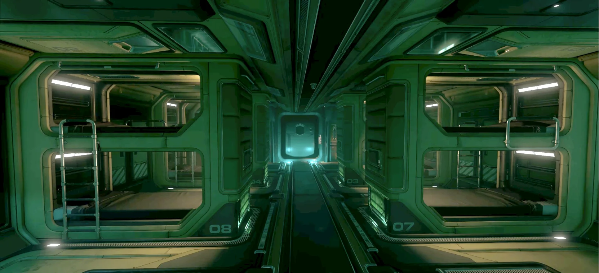
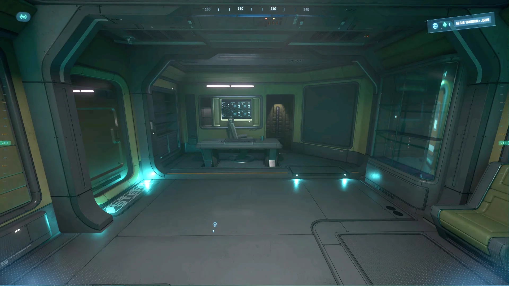
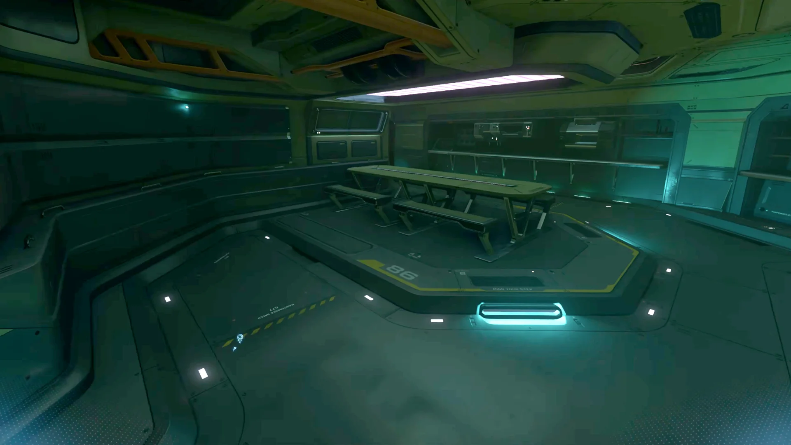
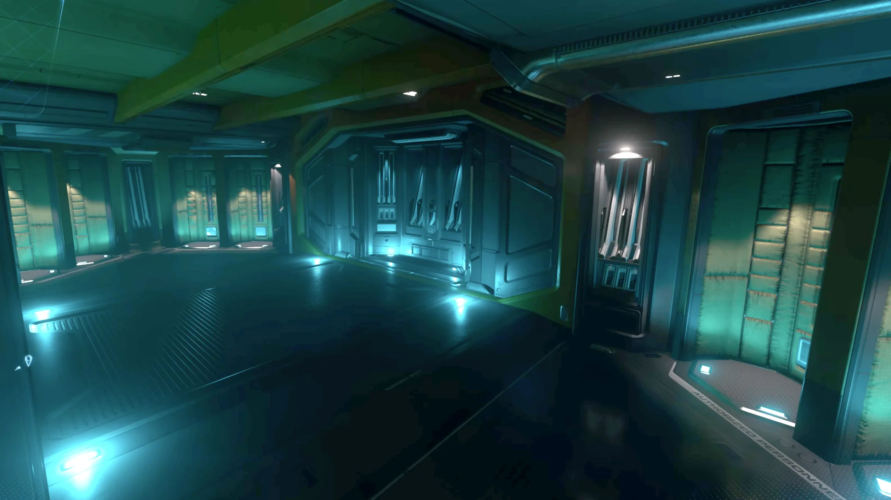
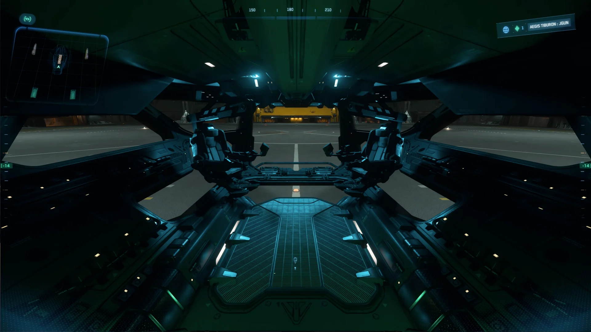

Suprimentos, combustível, munição, blindagem e escudo disponíveis para a missão. Clique nas células
para consumir ou abastecer.
Suprimentos0/0
Combustível0/0
Munição0/0
Blindagem / Escudo0/0
Layout do Convés Principal — Popa à Proa
A Tiburon possui um único convés contínuo de 121 metros. Abaixo, cada seção numerada no sentido
popa→proa.

SEÇÃO 1 — POPA
Baía de Carga
Rampa retrátil na popa inferior. Comporta 20 unidades de carga ou um rover Ursa para exploração
de superfície. A grade de carga é magnetizada para fixação em gravidade zero. Uma passarela
elevada circunda o compartimento, conectando ao corredor de engenharia.

SEÇÃO 2
Corredor de Engenharia
Espinha dorsal técnica da nave. Abriga os componentes principais: planta de força, resfriadores,
drive quântico e relés de distribuição. Painéis de acesso em ambos os lados. Oito cápsulas de
escape (4 por bordo) alinhadas ao longo do corredor. Terminais de diagnóstico permitem monitorar
todos os sistemas vitais.

SEÇÃO 2.5 — ADAPTAÇÃO WARP
Docks Ventrais — P-72 Archimedes
Duas escotilhas no piso do corredor de engenharia dão acesso aos docks magnéticos ventrais. Cada
dock acomoda um mini-caça P-72 Archimedes (Kruger Intergalactic) acoplado
externamente sob o ventre da nave. Os caças servem como escolta leve e reconhecimento rápido
durante a aproximação planetária. O acoplamento é magnético — não consomem espaço da baía de
carga.

SEÇÃO 3
Alojamentos da Tripulação
Oito beliches para a tripulação androide, cada um com locker pessoal de armazenamento. Banheiros
com chuveiros e pias. Os alojamentos incluem estações de recarga por indução para os chassis dos
androides, permitindo recuperação de energia durante o sono.

SEÇÃO 4
Quartos do Capitão
Suíte privada adjacente aos alojamentos. Contém o núcleo de processamento
A.L.M.A. — o cérebro físico da IA Capitã. A interface de comando inclui consoles
redundantes e um trono de dados com conexão neural ao mainframe da nave. Diferente dos
tripulantes, a IA não dorme — mas este espaço serve como seu centro de operações.

SEÇÃO 5
Refeitório e Cozinha
Espaço comum com mesa central e cozinha equipada. Para os androides, a área inclui uma estação
de manutenção básica e um terminal de acesso ao diário de bordo da missão. É aqui que a
tripulação se reúne para briefings ou simplesmente para existir em conjunto.

SEÇÃO 6
Arsenal e Sala de Preparação
Antiga câmara de acoplamento convertida em arsenal. Contém racks para todos os tamanhos de
armamento portátil (Size 1 a 5), armários de munição e trajes EVA. É o último espaço antes da
ponte — onde os androides se equipam antes de desembarcar ou defender a nave.

SEÇÃO 7 — PROA
Ponte de Comando
Posicionada sob o casco dianteiro, com visão inferior e frontal. Dois assentos de piloto
espelhados — qualquer um pode assumir navegação, armas e comunicações. É aqui que a IA Capitã se
manifesta em forma holográfica quando deseja ser vista. Consoles dedicados para varredura
planetária, comunicação com a base e controle do drive quântico.

Integração: IA Capitã A.L.M.A.
A Tiburon não é apenas uma nave — é o corpo físico da IA Capitã. O sistema
A.L.M.A. (Arquitetura Lógica de Máquina Autônoma) está integrado a cada sistema da
nave: navegação, armas, suporte vital, sensores e comunicação.
A IA experimenta a nave como um humano experimenta o próprio corpo. Sensores são seus olhos. O drive
quântico é seu coração. As antenas de comunicação são sua voz. Quando a tripulação está em campo, a IA
mantém a Tiburon em órbita, monitora as transmissões dos androides e coordena a logística da missão.
Em caso de emergência, a IA pode assumir controle total da nave, incluindo manobras evasivas e fogo
defensivo — mas prefere que os tripulantes operem as estações. Afinal, delegar é um traço de boa
liderança.
Sistemas Defensivos
Arma Primária
Supremacy-10T
Laser de Proa — Dano Concentrado
Torres Laterais
4× C-07T
Canhões Balísticos — Torres Remotas
Torre de Popa
4× CF-447
Repetidores Laser — Torre Tripulada
Mísseis
32× S3
Mísseis Teleguiados Antinave
Escolta Leve
2× P-72
Archimedes — Dock Ventral
Blindagem
Reforçada
Placas Compostas — Físico e Energia
Escolta Leve — P-72 Archimedes
O P-72 Archimedes é um mini-caça de escolta fabricado pela Kruger
Intergalactic. Projetado originalmente como nave de corrida, sua leveza e agilidade
o tornaram ideal para reconhecimento tático.
Na Tiburon, dois P-72 ficam acoplados magneticamente sob o ventre da
nave (Seção 2.5 do convés). Acesso rápido via escotilhas no corredor de engenharia. São a
primeira linha de defesa e os olhos da tripulação durante a aproximação orbital.
O Ursa Rover da Roberts Space Industries é um veículo de
exploração terrestre para todos os terrenos. Projetado para transportar tripulação e equipamento
de carga em ambientes hostis, é o veículo padrão de desembarque planetário.
Acomodado na baía de carga da Tiburon (Seção 1), o Ursa é a principal
ferramenta de exploração de superfície. Capaz de operar em desertos escaldantes, tundras
congelantes e terrenos rochosos — todos os tipos de planeta que a missão WARP pode encontrar.